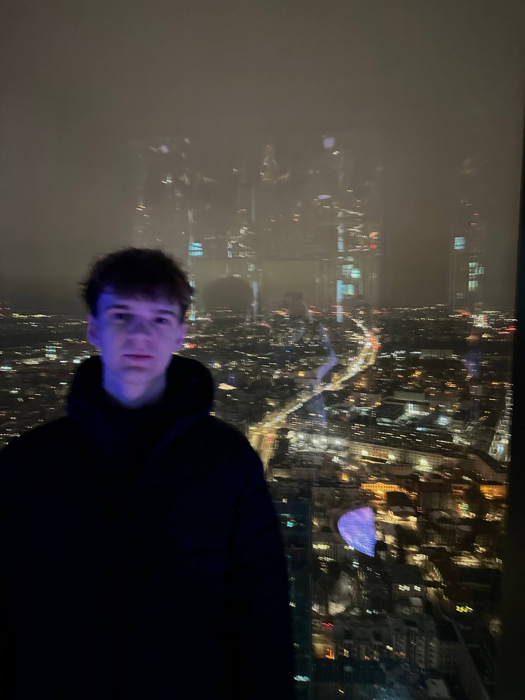

Twórca gier i stron
Pomagałem tworzyć strony internetowe i gry na platformie UNITY.

Miasto: Warszawa
E-mail: rdidkovvvi1@gmail.com
Telefon: +48 987 007 582
Moje profile:
Jestem studentem informatyki, interesuję się programowaniem webowym. Uczę się tworzyć pierwsze projekty w nieznanych językach i spróbuję stworzyć swój pierwszy trudny projekt.
Pomagałem tworzyć strony internetowe i gry na platformie UNITY.
Brałem udział w organizacji różnych wydarzeń społecznych i edukacyjnych.
Uczelnia Vistula
Kierunek: Informatyka
Lata nauki: 2025 - obecnie